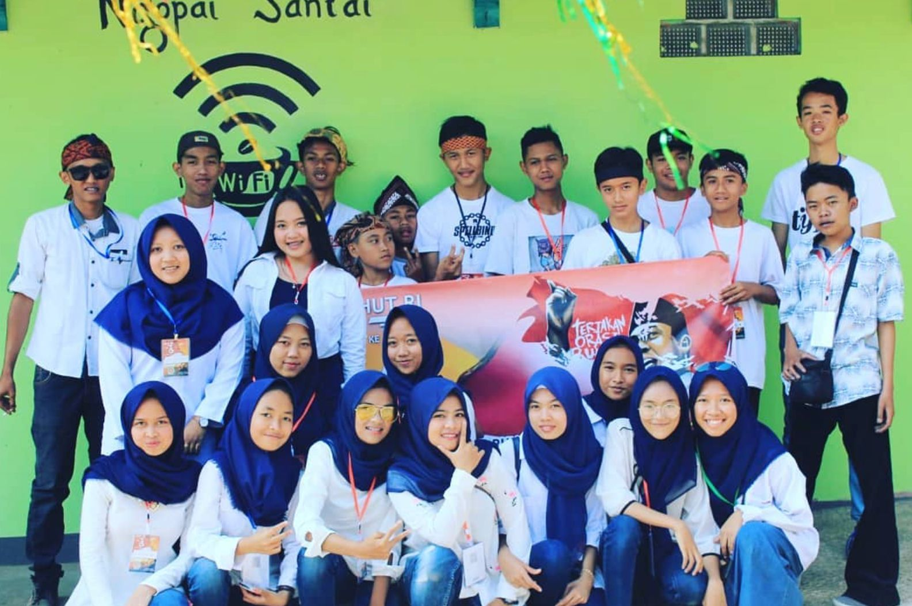

Festival Pawai 17 Agustus 2018
Deskripsi Kegiatan
Ada yang berbeda dari perayaan Kemerdekaan RI ke-73 di Desa Cikalong. Tahun 2018, SABANUSA tidak hanya hadir sebagai peserta biasa — melainkan tampil sebagai kontingen yang mencuri perhatian ribuan pasang mata di sepanjang rute pawai 5 kilometer. Dengan konsep yang matang, kostum yang memukau, dan semangat yang membara, malam itu nama SABANUSA bergema di seluruh sudut desa.
Cerita Lengkap
Dua minggu sebelum 17 Agustus, halaman sekretariat SABANUSA berubah menjadi bengkel kreasi yang tidak pernah sepi. Dari pagi hingga larut malam, anggota silih berganti datang — ada yang menjahit kostum, ada yang merakit properti, ada yang berlatih formasi barisan. Konsep yang dipilih tahun itu berani dan penuh ambisi: "Pemuda Penerus Bangsa" dengan tema kemajuan teknologi, menggabungkan elemen tradisional dan futuristik dalam satu penampilan yang kohesif.
Tidak semua berjalan mulus. Ada beberapa malam di mana diskusi soal desain kostum nyaris berujung debat panas. Ada properti yang harus dibuat ulang karena tidak sesuai ekspektasi. Ada anggota yang hampir mundur karena padatnya jadwal latihan. Tapi setiap kali semangat mulai goyah, selalu ada yang mengingatkan: "Kita sudah terlalu jauh untuk mundur. Kita akan tampil, dan kita akan tampil dengan luar biasa."
🎉 Detail Penampilan Kontingen SABANUSA
- Tema: "Pemuda Penerus Bangsa" — tradisi bertemu teknologi
- Kostum: perpaduan batik modern dengan elemen futuristik
- Properti utama: replika drone mini dan layar LED portabel
- Formasi: barisan dinamis yang berubah-ubah sepanjang rute
- Peserta kontingen: 35 anggota SABANUSA
- Rute pawai: 5 kilometer memutari Desa Cikalong
- Capaian: Juara 2 kategori kelompok pemuda
Malam pawai tiba. Jalanan Desa Cikalong dipenuhi ribuan warga yang berdiri di pinggir jalan, lengkap dengan bendera merah putih kecil di tangan. Dari total 25 kontingen yang ikut, SABANUSA mendapat giliran tampil di urutan tengah — posisi yang justru menguntungkan karena penonton sudah hangat namun belum kelelahan melihat atraksi.
Ketika barisan SABANUSA melintas, penonton yang tadinya tenang langsung bergemuruh. Formasi yang terus berubah-ubah membuat penonton penasaran dan terus mengikuti. Kostum yang memadukan batik dengan sentuhan modern terlihat segar dan berbeda dari kontingen lainnya. Dan ketika properti replika drone dinyalakan lampunya di kegelapan malam, "oooh" dan "aaah" terdengar dari pinggir jalan.
Pengumuman pemenang datang di penghujung malam. Ketika nama SABANUSA disebut sebagai Juara 2 kategori kelompok pemuda, sorak sorai memecah malam. Pelukan, tangis haru, dan tawa campur aduk dalam satu momen yang tidak ada satu orang pun bisa menggambarkannya dengan kata-kata. Dua minggu perjuangan, ratusan jam latihan, dan begadang berkali-kali — semua terbayar lunas dalam detik itu.
Tapi yang paling dikenang bukan tropi atau gelar juara. Yang paling dikenang adalah perjalanan 5 kilometer itu — berjalan bersama, satu langkah demi satu langkah, di bawah lampu jalan yang menerangi desa yang sama-sama mereka cintai. Karena pada akhirnya, itulah makna kemerdekaan yang sesungguhnya bagi SABANUSA: bukan sekadar angka di kalender, tapi semangat yang terus berjalan, terus bergerak, dan tidak pernah berhenti.